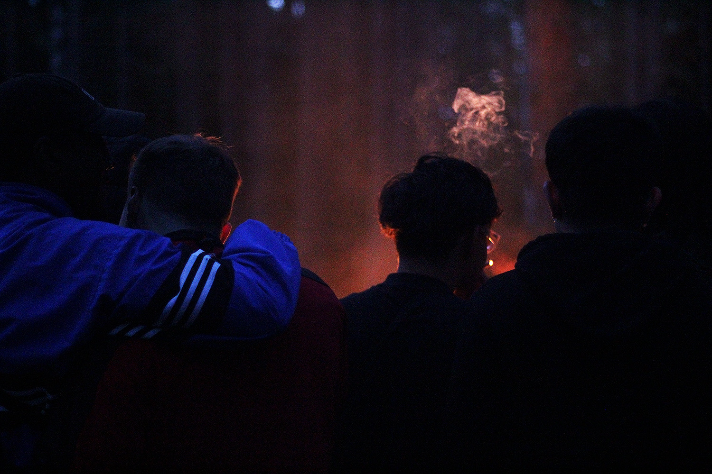
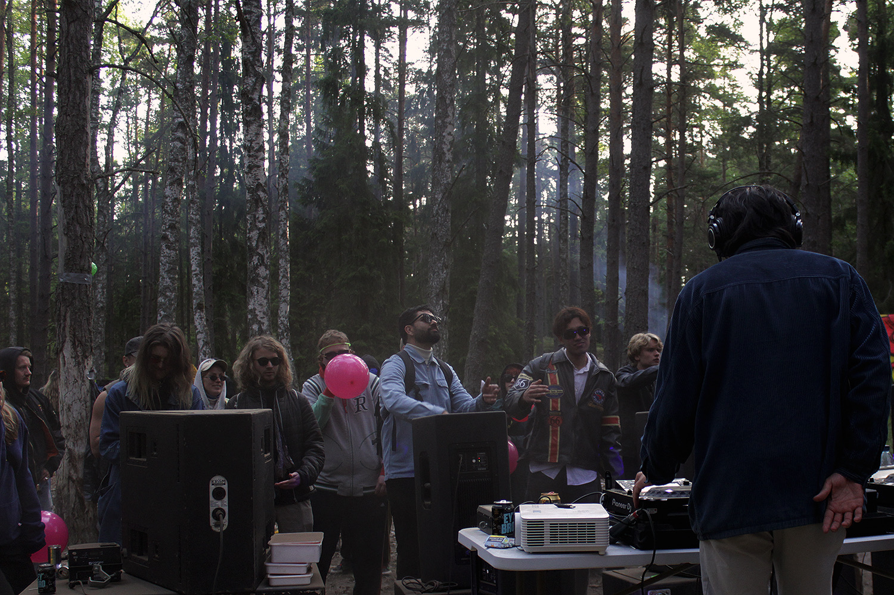
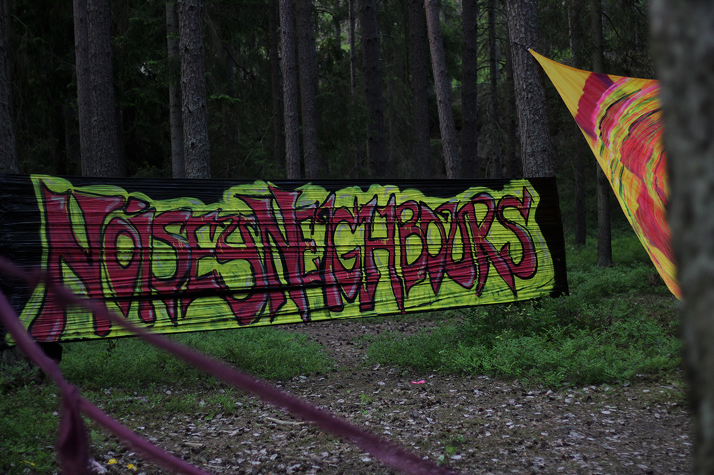
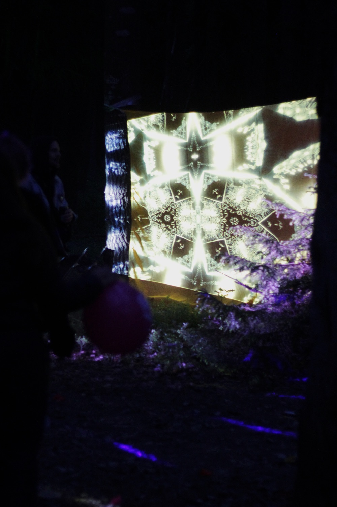
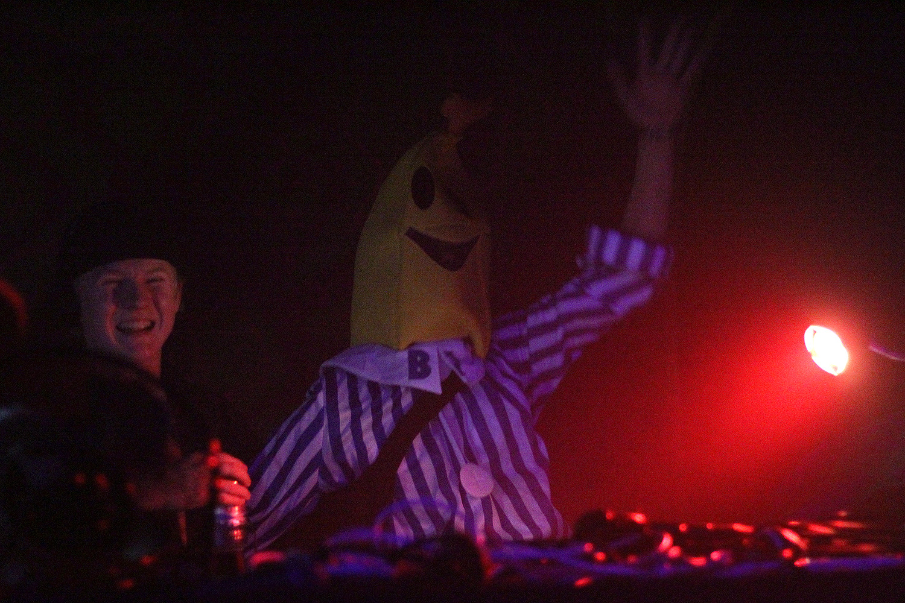
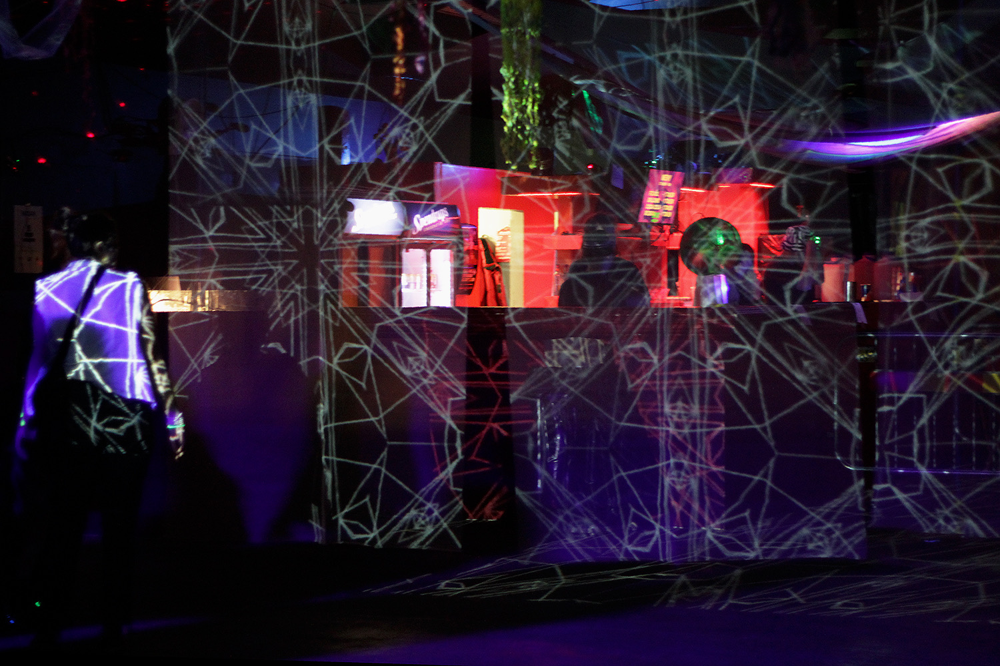
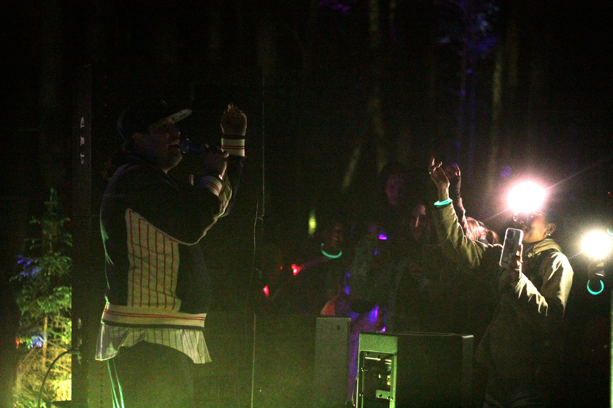
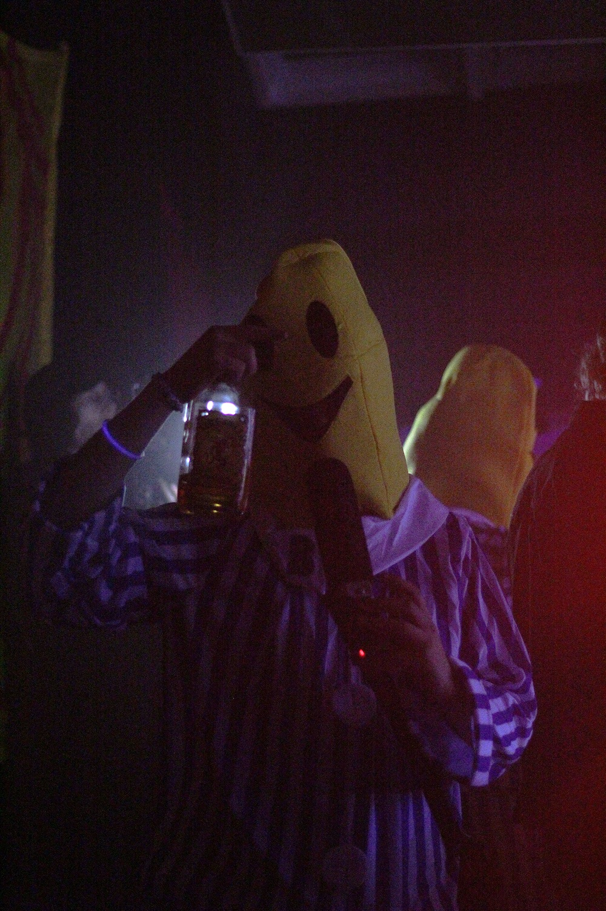
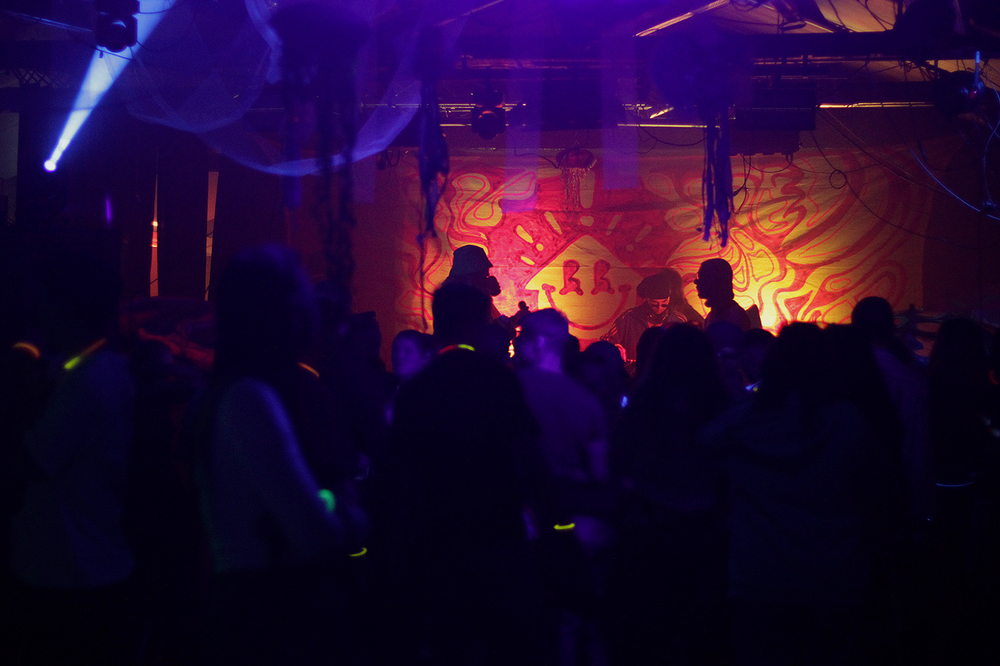

Stockholm / 2021—2024 / Rave collective
Noisey Neighbours
A friend and I bought a far too large speaker system for his birthday party. When it was over, we were left with roughly 800 kilos of speakers and no sensible use for them.
We had spent the previous years exploring Stockholm’s rave scene. Starting our own events felt like the obvious answer.
≈800 kg of speakers




Noisey Neighbours, on film.



What I did
From idea to teardown.
Noisey Neighbours became a multi-year rave collective. A partner and I carried the primary responsibility for making each night happen. It also gave us a place to play our own music.
- Before the nightProject management, branding and art direction, organic marketing and paid promotion, finance, locations, purchasing, logistics and team coordination.
- During the nightSetup, door, bar and wardrobe operations.
- AfterwardsTeardown and settling the finances.